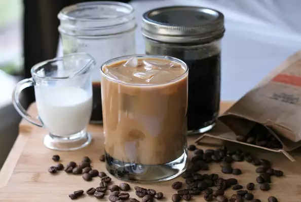

Sous Vide "Cold Brew" Coffee

Prep: 10 mins
Cook: 2 hrs
Total: 2 hrs 10 mins
Servings: 8
Yield: 8 coffee drinks
Description
Ingredients
- 1 cup coarsely ground coffee
- 4 (16-ounce) Mason jars
- 8 cups water
Directions
- Place 1/4 cup coffee grounds into each jar, then top with water. Screw on the lids until just barely tightened; do not overtighten.
- Fill a large pot with enough water to cover the jars completely and place a sous vide immersion cooker into the water. Set temperature to 150 degrees F (65 degrees C) according to manufacturer's directions.
- Submerge mason jars into the water bath and set timer for 2 hours.
- Remove jars to a cooling rack and let cool until easily handled. Strain the mixture through a coffee filter to stop the steeping process. Pour over ice and serve, or return to rinsed-out jars and store in the refrigerator for up to 1 week.
Cook's Notes
Feel free to use any size jars, but keep the 1:8 coffee to water ratio in mind. For a 32-ounce quart-size jar, use 4 cups of water and 1/2 cup of coffee grounds.
For a lighter brew, set timer for 1 1/2 hours. For a more concentrated brew, set timer for 2 1/2 hours.